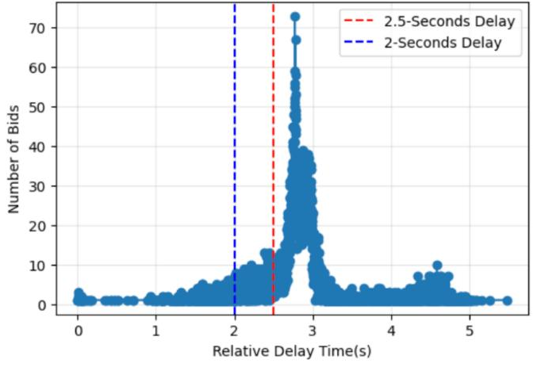
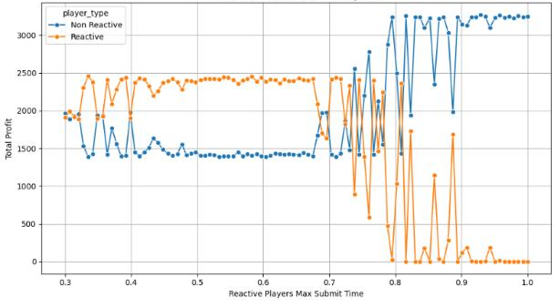
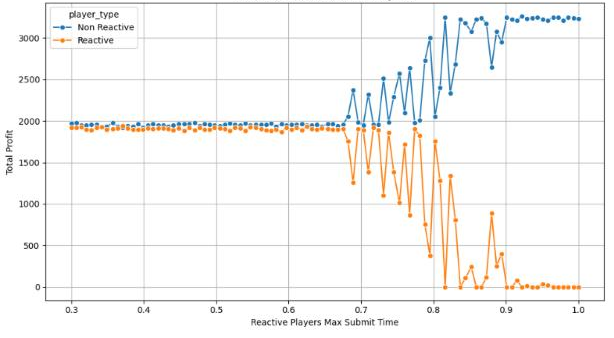

The question
Ethereum sells the right to build each block in a live auction every 12 seconds. Builders with faster connections can wait, watch rivals, and bid at the last moment. These timing games reward speed over skill. Execution auctions propose selling the right in advance through sealed bids, so waiting gains nothing. We tested whether that removes the speed advantage.

My role
- Data: queried and analyzed public Ethereum auction data in BigQuery.
- Simulation setup: helped design the auction simulation and set its parameters from that analysis.
- The game-theory proofs were led by teammates.
What the data showed
Out of 82 builders that won blocks, we picked two with contrasting styles:
| Builder | Blocks won | Avg. bid / value | Bid std. dev. | Total profit (ETH) | Profit per block (ETH) |
|---|---|---|---|---|---|
| beaverbuild | 131,544 | 0.89 | 0.42 | 3,037.32 | 0.023 |
| bobTheBuilder | 178 | 0.85 | 0.33 | 3.03 | 0.017 |
Sources: Google BigQuery public Ethereum datasets; Flashbots Collective, "Block Builder Profitability: Dec 2023 – Feb 2024".
beaverbuild's total profit is about 1,000 times larger, but most of that is volume: it won about 740 times more blocks. Per block won, the gap is only about 1.4x. Their bid levels, spread, and timing became the simulation's inputs.
The simulation
Two builders compete for 216,000 rounds: a slow one that bids early and a fast one that waits and slightly outbids the best bid it has seen, at the risk of missing the cutoff. We ran the same matchup twice: once with bids visible (today's open auction) and once with sealed bids.


Both builders bid 70% of their valuation. X-axis: the fast builder's latest submit time; past ~0.7 it starts missing the cutoff and its profit collapses in both formats.
When does speed win?
Holding the fast builder at a 70% bid in the sealed auction, speed only clearly wins when the slow builder bids too little or too much. Near 60–70%, the slow builder edges ahead, mostly because the fast one sometimes misses the cutoff.
- How much you bid matters more than when you bid in a sealed auction.
- With 5 builders per side, the best bid level was about 90% of valuation, close to what the two real builders bid (85–89%).
What this does and doesn't show
The results support, but do not prove, that sealed auctions weaken timing games. Valuations are assumed equal, strategies are simple rules, and two players are a loose stand-in for a real market. In real data we also can't tell "lost the auction" apart from "didn't bid".
SJSU CAMCOS, Spring 2025 · PIs: Dashiell Fryer, Yan X Zhang · Sponsor: Ethereum Foundation · Full paper ↗